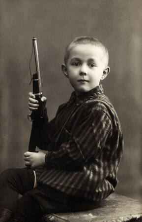
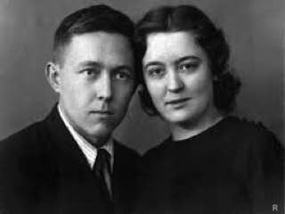
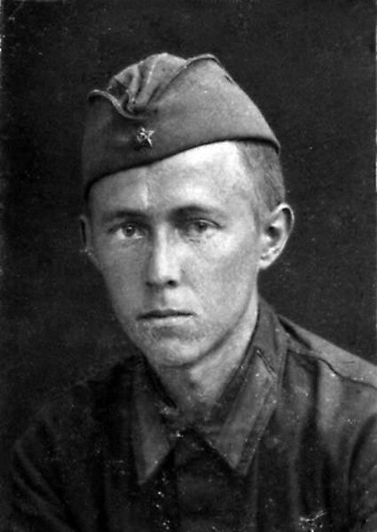
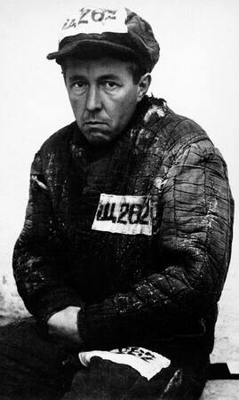

Александр Исаевич Солженицын родился 11 декабря 1918 года в Кисловодске (ныне Ставропольский край) в семье крестьянина и дочери хозяина богатейшей на Кубани экономии. Отец Саши погиб из-за несчастного случая на охоте еще до его рождения. Мальчик знал его только по фотокарточкам и рассказам матери, Таисии Щербак. Когда началась Первая мировая война, Исаакий Солженицын бросил университет и ушел добровольцем на фронт. С женой он познакомился во время короткого отпуска в Москве: Таисия Щербак тогда училась на сельскохозяйственных женских курсах княгини Голицыной. С началом революции занятия прекратились, и она вернулась к родителям в село Кубанское (современный город Новокубанск).
Вскоре после рождения Александра Солженицына в село пришли большевики, установилась советская власть — и у семьи отобрали все имущество. Таисия Солженицына с ребенком переехала в Ростов-на-Дону и устроилась стенографисткой. Она знала английский и французский языки, но на высокооплачиваемую работу дочь кулака не брали.
После революции 1917 года и Гражданской войны семья была разорена, и мать перевезла Сашу в Ростов-на-Дону, где он в 1936 году окончил школу. Кстати, именно во время обучения в старших классах у него появилась любовь к литературе: он писал эссе и стихотворения.
В 1926 году Александр Солженицын пошел в школу. Он рано начал читать Льва Толстого: уже в 10 лет он познакомился с «Войной и миром». Мальчик мечтал стать писателем, сочинял приключенческие рассказы и даже составил из своих произведений две рукописные газеты.
Летом 1939 года Солженицын подал документы на заочное искусствоведческое отделение в Московский институт философии, литературы и истории (МИФЛИ). Вскоре он перевелся на факультет русской литературы, продолжая учиться и в РГУ.
В университете Александр Солженицын познакомился со своей будущей женой — Натальей Решетовской. Они поженились на четвертом курсе, втайне от родных. Писатель вспоминал: «Здесь больная черта моей биографии. Я с мамой был дружен, всегда охотно помогал ей, по всем очередям бросался, ничего не требовал для себя, ни подарков, ни игрушек. Но, начиная со старших классов, стал отдаляться от мамы, стал самостоятельно строить свою жизнь. Совершенно несчастной была моя привязанность к Наташе Решетовской, мама ее явно недолюбливала, но из деликатности мне ничего не говорила, не пыталась влиять на меня, не лезла в душу, а я пользовался этим — живу как хочу».
В июне 1941 года Солженицын с отличием окончил РГУ и, досрочно сдав последний экзамен, уехал в Москву на сессию второго курса МИФЛИ.
В апреле 1942 года Солженицын был направлен в артиллерийское училище, откуда в ноябре уже вышел лейтенантом и был откомандирован в Саранск в запасной артиллерийский разведывательный полк. В действующей армии находился с марта 1943 года: служил командиром батареи звуковой разведки на Центральном и Брянском фронтах. 15 сентября ему было присвоено звание старшего лейтенанта, а весной 1944 года он выступал в роли командира батареи звуковой разведки Белорусского фронта. 7 мая стал капитаном.


Во время службы Солженицын начал критиковать Сталина за «искажение ленинизма», чем делился в переписках с другом, рассказывая ему о некой революции. 9 февраля 1945 года он был арестован, лишен воинского звания капитана, а затем отправлен в Москву, в Лубянскую тюрьму.
После проведения ряда допросов 7 июля Солженицына заочно приговорили к восьми годам исправительно-трудовых лагерей и вечной ссылке по окончании срока заключения. В августе его направили в лагерь Новый Иерусалим, а 9 сентября – в Москву, где во время заключения он строил жилые дома. В июне 1946 года писателя перевели в систему спецтюрем 4-го спецотдела МВД, в сентябре – в закрытое конструкторское бюро при авиамоторном заводе в Рыбинске, в феврале 1947 года – в аналогичное место в Загорске, 9 июля – в Марфино, где он трудился математиком и начал писать автобиографическую поэму «Дороженька».
19 мая 1950 года из-за конфликта с руководством Солженицына переправили в Бутырскую тюрьму, оттуда в августе – в особый лагерь в Экибастузе на общие работы. Позже жизнь в этом лагере нашла отражение в рассказе «Один день Ивана Денисовича» и киносценарии «Знают истину танки».
Зимой 1952 года у писателя была диагностирована семинома – оперировали его в лагере. 13 февраля 1953 года Солженицын был освобожден и отправлен в пожизненную ссылку в село Берлик Джамбульской области Казахстана, где трудился школьным учителем математики и физики старших классов.
К концу 1953 года здоровье писателя оставляло желать лучшего – у него был диагностирован рак. После чего в январе 1954 года его направили в Ташкент на лечение, откуда в марте он вернулся уже чувствующим себя намного лучше. Весной 1955 года Солженицын под влиянием всего произошедшего с ним начал работу над повестью «Раковый корпус». А в июне 1956 года решением Верховного Суда СССР он был освобожден без реабилитации «за отсутствием в его действиях состава преступления».
Вернувшись в августе 1956 года в Центральную Россию, автор поселился в деревне Мильцево Владимирской области, где стал преподавать математику и электротехнику старшим школьникам. Жизнь в этом местечке легла в основу повести «Матренин двор»

6 февраля 1957 года Военная коллегия Верховного суда СССР решила реабилитировать Солженицына. А в июле 1957 года он перебрался в Рязань, где трудился учителем физики и астрономии в средней школе.
11 сентября 1964 года Солженицыну запретили литературную деятельность в России, изъяли огромное количество его произведений, редакции стали отказываться публиковать его творчество. Автор был вынужден распространять его в США и Европе. В феврале 1967 года он тайно закончил работу над произведением «Архипелаг ГУЛАГ». 4 ноября 1969 года после антипропаганды в прессе он был исключен из Союза писателей СССР. Власти даже просили писателя покинуть страну, но он отказался. Дело было настолько серьезным, что специально был создан отдел КГБ, занимавшийся исключительно оперативной разработкой Солженицына.
7 января 1974 года было принято постановление привлечь Солженицына к судебной ответственности, а затем – сослать его. 12 февраля он был арестован, обвинен в измене Родине и лишен советского гражданства, а на следующий день буквально выгнан из страны в ФРГ. Несколькими днями позже из библиотек стали изымать произведения писателя и уничтожать их. Совершив недлинное путешествие по Европе, Солженицын решил осесть в швейцарском Цюрихе.
С приходом перестройки в СССР официальное отношение к творчеству Солженицына стало меняться. Были опубликованы многие его произведения, в частности «Архипелаг ГУЛАГ». В 1990 году он был восстановлен в советском гражданстве с последующим прекращением уголовного дела. После длинного телефонного разговора с Борисом Ельциным в 1992 году 27 мая 1994 года Солженицын вернулся на родину, где в 1998 году издал объемное историко-публицистическое сочинение «Россия в обвале». 12 июня 2007 года Владимир Путин посетил Солженицына, а после была учреждена литературная премия его имени.
В конце 2002 года писатель перенес тяжелый гипертонический криз: тяжело болел, после перенесенной им операции у него работала только правая рука, но он продолжал писать, трудясь над самым полным, тридцатитомным собранием сочинений. 3 августа 2008 года на девяностом году жизни скончался в своем доме в Троице-Лыкове от острой сердечной недостаточности. 6 августа прах Александра Солженицына был предан земле с воинскими почестями в некрополе Донского монастыря за алтарем храма Иоанна Лествичника. На заупокойной службе присутствовал президент России Дмитрий Медведев.